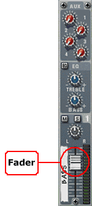
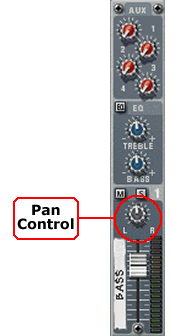
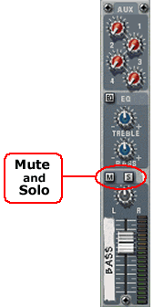
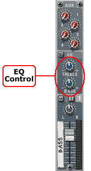
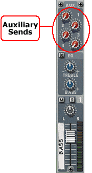
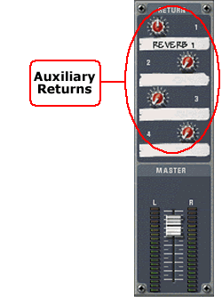
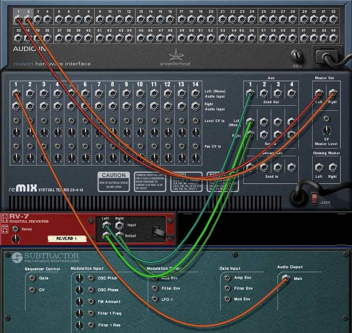
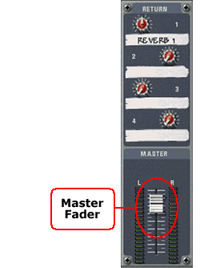

Mixer Controls
Take a look at six basic controls found in a mixing board.
The Fader
The first step along the path is a level control, generally controlled by a sliding controller called a fader.

A fader in Reason's mixer channel
Generally there will be a location marked along the path of the fader that indicates unity gain, that is, where the same electrical level of the input signal is output by the fader.
Typically this will be about 2/3 the way up the fader's range. As the fader is moved below that point, the signal is attenuated (decreased in level), and as it moves above that point, the level is boosted or amplified.
Panning
After the level fader, the signal progresses to a panning control.

The pan control in a Reason mixer channel
At the center point, the input signal is routed equally to both the right and left outputs. As the pan control is rotated towards the left, the signal will be routed more toward the left output, less to the right output. Likewise as the pan control is rotated towards the right, the signal will be routed more towards the right output and less to the left.
Mute and Solo
Above the Pan control are two push-button switches labeled "M" for mute and "S" for Solo.

Mute and solo buttons in Reason's mixer channel
Pushing in the mute button will disconnect the signal from the output path, and will keep the sound from being heard. This is useful when comparing a mix with or without a given sound source. The mute feature is often used in final mix-down stages to keep an input channel silent when no signal is present, in case the instrument or the mixer has a steady noise floor that is audible.
The solo button is used to mute all other signals so that only the selected input source is passed to the output. This is useful when you want to hear only a single source while making adjustments to a sound within a full mix, and repeated presses allow you to hear the isolated sound then in the context of the entire mix.
Equalization
The next step along the signal path is the equalization section, where the of the sound may be modified. The Reason channel strip has only two controls here, for Bass and Treble.

EQ controls in a Reason mixer channel
These two knobs have a center point where the knob has no effect on the signal. Rotating the Treble knob to the right will boost the high frequency components of the sound, while turning it to the left will attenuate the same frequencies.
Likewise, rotating the Bass knob to the right will boost the lower frequency components of the sound, and turning it to the left will attenuate the bass frequencies.
Some mixers will have three bands of EQ: low, middle, and high frequencies. Some mixers will also allow you to set the range of these bands that will be affected by the equalization controls in addition to the amount that the frequency range will be boost or cut.
Auxiliary Bus Controls
Continuing along the signal path, we come to the auxiliary bus controls.

Four auxiliary sends in a Reason mixer channel

Four auxiliary returns in Reason's master section
These four controls allow you to route the channel's signal to up to four external devices using the auxiliary bus. A bus is simply a pathway that we use to send a signal from one place to another. The control for any bus send determines the amount of signal that is sent to a destination. With the control set to a minimum value, no signal is being sent. The auxiliary send doesn't interrupt the signal path through the channel strip; it's used to divert some of the signal to an external output. As we saw when we configured a Reason studio in Lesson 2, an auxiliary bus can be used to send some of the signal in a channel out of the mixer to an external effects processor.
Once a signal has been processed, it's returned to the mix via the Auxiliary Return inputs located in the master section of any mixer. The control on the auxiliary return determines the amount of signal added to the unprocessed, mixed signal being output to a stereo mix deck.

Reason's back panel showing auxiliary send and return connections.
The auxiliary busses allow signals from multiple channel strips to be routed to the same processing device, such as reverb, and the aux send knob allows each channel to control how much reverb will be added to that individual signal.
The return controls allow you to set the amount of effect (such as reverb) that is added to the mix. This level is common for all signals going to the reverb.
Master Fader
At this point the signal is routed to the master faders, which control the master output level that is, the final level of the signals leaving the mixer.

The master fader in Reason